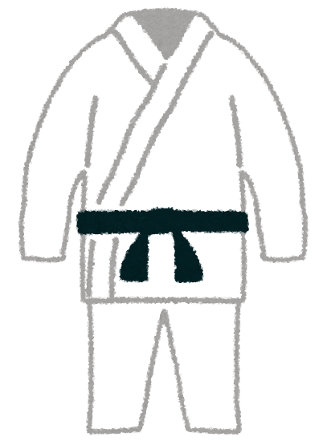

柔道のみどころ！
-

ダイナミックな技を決めきることで一本勝ちすることができ、その一本はとても爽快感があり技の派手さも相まってとても圧倒される
-
また、一本が取れなくても技ありや有効といったポイントがあり、両者の読みあいの中でいかに技ありを狙っていくかなどの駆け引きは緊張感があり試合を面白くさせてくれる
-
通常階級別に分かれて競技するが、それでも体格差が出てしまう場面もあるが小さな選手が大きな選手を翻弄してしまうような立ち回りはとても魅力的な戦いに見える
-
オリンピックでは日本は柔道大国として多くのメダルを獲得していることから、その注目度は高く、世界にも大きな影響を与えている。